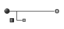
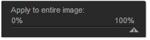

U Point technology lets you use Control Points to isolate objects and areas in an image and selectively apply filter effects to them.
For more, visit www.upoint.com
Control Point Adjustments
 Each Control Point has two sliders:
The top slider, Size, adjusts the Control Point’s size or reach.
The bottom slider, Opacity, controls the amount of filtering applied to the area specified by the Size parameter. At 100%, the filter’s full effect is applied; at 0%, the object or area retains its original colors and details.
The following controls apply to all filters.
Add 0% Control Point
Click this button to add Control Point preset to no filter effect. The mouse pointer changes, prompting you to place a Control Point on the image. After placing the Control Point on the image, you can adjust the Opacity slider.
Add 100% Control Point
Click this button to add a Control Point preset to the filter’s full effect. The mouse pointer changes, prompting you to place a Control Point on the image. After placing the Control Point, you can adjust the filter’s effect with the Opacity slider.
If the first Control Point added is a 100% Control Point, the Apply to entire image slider automatically goes to 0%, ensuring that the filter is applied only to the area defined by the Control Point. You can then adjust the slider manually.
Apply to entire image
This slider lets you specify how much of the current effect to apply across the entire image.
Subsequently added Control Points override this slider’s effect for the object they select. For example, if you apply a filter effect to an entire image, set Apply to entire image to 100%, and then add a Control Point to the sky at 0% opacity, the latter setting supersedes the former.